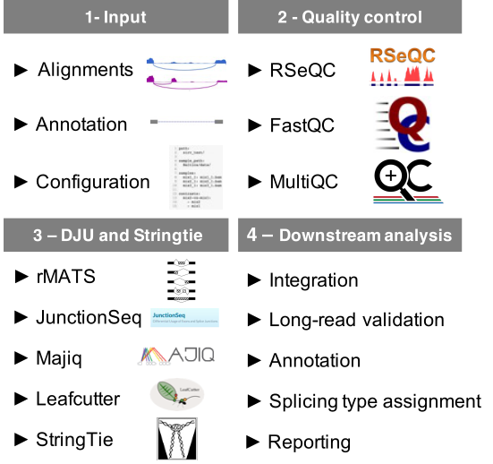

Workflow implementation¶
This chapter details the implementation and usage of each workflow in Baltica.
Baltica comprises a collection of Snakemake workflows (SMK files). Each file determines a series of sub-tasks (rules). The sub-tasks run in a specific order; once the output of every rule is complete, the workflow is considered successful. We implemented the workflows following instructions and parameters suggested by the methods authors unless otherwise noted.

Fig. 1 - Baltica overview: Baltica is a framework to execute and integrate differential junction usage (DJU) analysis and further investigation enabled by the data integration.
1 -- Input: Baltica takes as input RNA-seq alignments, reference annotation, and a configuration file.
2 -- Quality control: As the first step of the pipeline, Baltica performs quality control of alignments with RSeQC and FastQC, which is reported by MultiQC.
3 -- DJU and transcriptome assembly:
Next, Baltica computes DJU with JunctionSeq, Majiq, and Leafcutter, and uses Stringtie2 to detected new transcripts and exons in the dataset.
4 -- Downstream analysis:
Finally, we integrate the results from the DJU method. Optionally, Baltica can include an extra piece of evidence for DJU, such as DJU obtained from third-generation sequencing, to the integrated table. The set of introns is re-annotated using information from de novo transcriptome annotation, and splice types between SJ and exons are assigned. Finally, a Baltica compiles a report with the most relevant information.
Quality control workflow¶
Executed with:
baltica qc <config> --use-singularity
The first workflow comprises the quality control of the read alignments. This step aims to determine the success of sequencing and alignment. Baltica includes workflows for RSeQC 1 and FastQC 2. MultiQC 3 summarizes the output from both tools. In addition, users can use parameters from QC workflow into Baltica, such as maximum read length and library type.
Beyond the quality control, this step may help to identify differences among the RNA libraries.
For example, RSeQC provides the proportion of reads per feature in the input annotation.
Differences between case vs. control, such as enrichment of reads aligned to introns, may suggest technical artifacts or global changes in splicing.
In addition, RSeQC provides the junction_saturation.py method, which quantifies the abundance of known and novel SJ in the RNA-seq alignments, and diagnoses if the alignment coverage detects known and novel splice junctions in sub-samples for alignments.
Thus, users can use this functionality to identify the saturation of annotated and unannotated SJ, or a higher level of coverage is needed.
In conclusion, the quality control step serves to identify potential problems with the RNA-Seq library alignment and, potentially, direct on further troubleshooting and downstream analysis.
RMATs workflow¶
Executed with:
baltica rmats <config> --use-singularity
RMATs 4 workflow is done in two steps:
- Determine the experimental groups.
- Run rmats.py.
Running RMATs prep and post tasks separately and paired statistical test were not implemented in Baltica.
JunctionSeq workflow¶
Executed with:
baltica junctionseq <config> --use-singularity
JunctionSeq 5 workflows starts by junction read counts extraction done with QoRTs 6. In Baltica implementation for JunctionSeq workflow, we only consider reads that span multiple exons (splice junction reads, SJ) for annotated and unannotated introns, ignoring exon counts. JunctionSeq uses disjoint genomic bins to flatten the transcriptome annotation. To test the hypothesis that features are differently expressed in experimental groups, JunctionSeq fits a generalized linear model, as described in DEXSeq 7, but reporting a test statistic at the genomic feature and gene level. Unlike other DJU methods, JunctionSeq does not group the introns or S in AS events, so it does not compute PSI events but rather log fold change.
Baltica parses the *_sigGenes.results.txt.gz (located at junctionseq/analysis/) and discard entries that were flagged as not testable.
Software dependencies and docker image recipe.
Majiq workflow¶
Executed with:
baltica majiq <config> --use-singularity
Majiq workflow includes the following steps:
1. Create a configuration file (majiq/build.ini)
1. Converts the reference annotation from gtf to gff with gtf2gff3.pl
1. majiq build generates the Splice Graph database with exons and SJ from the RNA-Seq experiment and the reference annotation
1. majiq deltapsi: computes ψ and Δψ and tests if the Δψ significantly changes between comparisons. Introns are called significant if the probability of Δψ > threshold is higher than non-changing-threshold, where threshold and non-changing-threshold are the --threshold and --non-changing-threshold parameters, respectively
1. voila tsv: filter and outputs the Majiq result to a tab-separated value file
Majiq visualization methods, such as voila view, are not currently implemented in Baltica but can be used independently.
Baltica parses the {comparison}_voila.tsv files - one per comparison, located at majiq/voila/.
Leafcutter workflow¶
Executed with:
baltica leafcutter <config> --use-singularity
Leafcutter uses Regtools8 to extract SJ reads from the BAM files. Next, introns with at least minclureads reads clustered.
The clustering procedure iteratively discards introns supported by less than
mincluratio reads within a cluster.
Finally, Leafcutter fits a Dirichlet-Multinominal model, which determines the SJ usage for each cluster the usage (proportion) of a
giving SJ within a cluster and compare this usage among conditions
The relevant output files from Leafcutter have the _cluster_significance.txt and _effect_sizes.txt suffix, computed for each comparison.
Column description:
*_cluster_significance.txt:
1. cluster: {chromosome}:{intron_start}:{intron_end}
1. Status: is this cluster testable?
1. loglr: the log-likelihood ratio between the null model and alternative
1. df: degrees of freedom, equal to the number of introns in the cluster minus one (assuming two groups)
1. p unadjusted p-value dor the under the asymptotic Chi-squared distribution
*_effect_sizes.txt:
1. intron: intron identifier on the format chromosome:intron_start:intron_end:cluster_id
1. es: effect size
1. {cond_1}: fitted junction usage in condition cond_1
1. {cond_2}: fitted junction usage in condition cond_2
1. deltapsi: difference between usage in the two conditions
Software dependencies and Docker image recipe.
Stringtie workflow¶
Baltica uses the gene, transcript, and class code assignments from the Stringtie output to the SJ from the DJU method outputs. In addition, exons defined by this annotation are used for assignments of splicing event types.
We process de novo transcriptomic workflow with Stringtie 9. First, we merge the alignment files from biological replicates. Next, we compute de novo annotation with Stringtie, using the parameters -c 3 -j 3 -f 0.01. Finally, the merge the multiple annotation with gffcompare -r {reference_annotation.gtf} -R -V. Details on the parameter selection are in the Integration chapter.
References¶
-
Liguo Wang, Shengqin Wang, and Wei Li. RSeQC: quality control of RNA-seq experiments. Bioinformatics, 28(16):2184–2185, June 2012. URL: https://doi.org/10.1093/bioinformatics/bts356, doi:10.1093/bioinformatics/bts356. ↩
-
Simon Andrews, Felix Krueger, Anne Segonds-Pichon, Laura Biggins, Christel Krueger, and Steven Wingett. FastQC. Babraham Institute, January 2012. URL: https://qubeshub.org/resources/fastqc. ↩
-
Philip Ewels, Måns Magnusson, Sverker Lundin, and Max Käller. MultiQC: summarize analysis results for multiple tools and samples in a single report. Bioinformatics, 32(19):3047–3048, Jun 2016. URL: http://dx.doi.org/10.1093/bioinformatics/btw354, doi:10.1093/bioinformatics/btw354. ↩
-
Shihao Shen, Juw Won Park, Zhi-xiang Lu, Lan Lin, Michael D. Henry, Ying Nian Wu, Qing Zhou, and Yi Xing. Rmats: robust and flexible detection of differential alternative splicing from replicate rna-seq data. Proceedings of the National Academy of Sciences, 111(51):E5593–E5601, Dec 2014. URL: http://dx.doi.org/10.1073/pnas.1419161111, doi:10.1073/pnas.1419161111. ↩
-
Stephen W. Hartley and James C. Mullikin. Detection and visualization of differential splicing in RNA-seq data with JunctionSeq. Nucleic Acids Research, pages gkw501, June 2016. URL: https://doi.org/10.1093/nar/gkw501, doi:10.1093/nar/gkw501. ↩
-
Stephen W. Hartley and James C. Mullikin. QoRTs: a comprehensive toolset for quality control and data processing of RNA-seq experiments. BMC Bioinformatics, Jul 2015. URL: http://dx.doi.org/10.1186/s12859-015-0670-5, doi:10.1186/s12859-015-0670-5. ↩
-
S. Anders, A. Reyes, and W. Huber. Detecting differential usage of exons from RNA-seq data. Genome Research, 22(10):2008–2017, June 2012. URL: https://doi.org/10.1101/gr.133744.111, doi:10.1101/gr.133744.111. ↩
-
Kelsy C. Cotto, Yang-Yang Feng, Avinash Ramu, Zachary L. Skidmore, Jason Kunisaki, Megan Richters, Sharon Freshour, Yiing Lin, William C. Chapman, Ravindra Uppaluri, and et al. Regtools: integrated analysis of genomic and transcriptomic data for the discovery of splicing variants in cancer. pre-print, Oct 2018. URL: http://dx.doi.org/10.1101/436634, doi:10.1101/436634. ↩
-
Mihaela Pertea, Geo M Pertea, Corina M Antonescu, Tsung-Cheng Chang, Joshua T Mendell, and Steven L Salzberg. Stringtie enables improved reconstruction of a transcriptome from RNA-seq reads. Nature Biotechnology, 33(3):290–295, Feb 2015. URL: http://dx.doi.org/10.1038/nbt.3122, doi:10.1038/nbt.3122. ↩